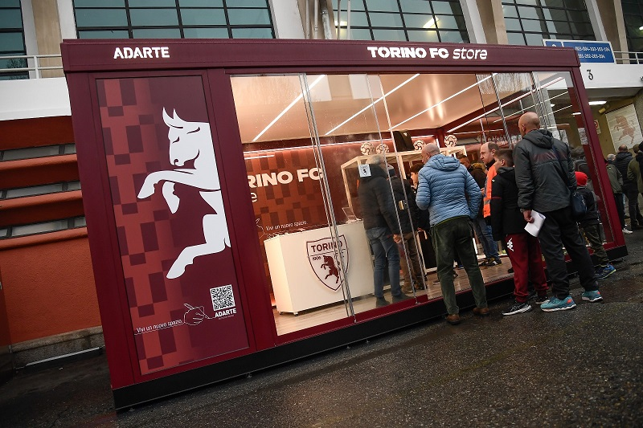

|
 |
POP-UP STORE STADIO
Via Filadelfia - Stadio Olimpico “Grande Torino”
Settore Distinti e Tribuna Ovest 1
I Pop-Up store all’interno dello stadio sono aperti
solamente durante i match day casalinghi due ore
prima del calcio d’inizio della partita fino al termine dell’evento.
|